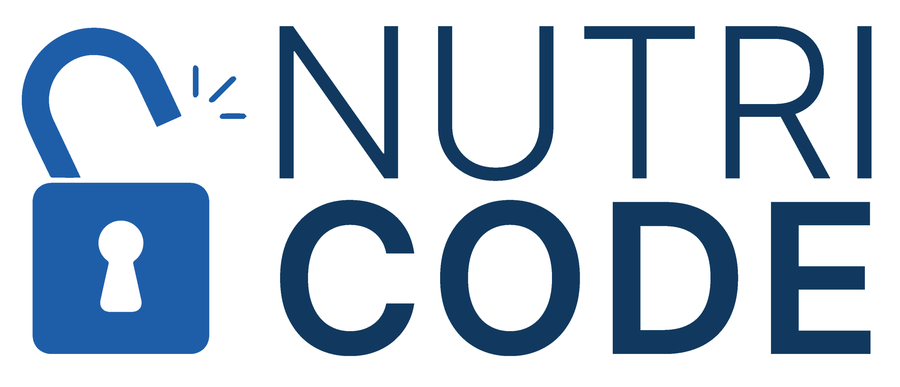

— Programas & Formações
Aprimore sua saúde &
conhecimento
Programas exclusivos desenvolvidos pela Dra. Vivian Campos para médicos, profissionais de saúde e pacientes que buscam transformação real.

Mentoria MIR
Metabolic Immune Reset
Programa de mentoria estruturado para médicos que desejam aprofundar o raciocínio clínico em casos complexos, conectando imunidade, metabolismo e inflamação. A proposta é sair da condução fragmentada e desenvolver uma visão integrada do paciente, com estratégia, lógica clínica e aplicabilidade prática.

MetabolizeIN Online
Programa de Metabolismo Integrativo
Metodologia completa para compreender e tratar disfunções metabólicas com abordagem funcional integrativa. Do diagnóstico ao protocolo.

Nutricode
Nutrição Funcional Avançada
Decodifique a nutrição individual de cada paciente. Aprenda a usar exames laboratoriais e genética nutricional para prescrições de alta precisão.
E-book Beleza Perigosa
O que ninguém te conta sobre exposições silenciosas
Uma leitura que amplia o olhar sobre substâncias e exposições do dia a dia que podem impactar imunidade, metabolismo e saúde a longo prazo. Entenda como fatores ambientais interferem no funcionamento do organismo e como reduzir riscos de forma consciente.
Todos os programas são desenvolvidos com rigor científico e experiência clínica de 18 anos.
Falar com a equipe